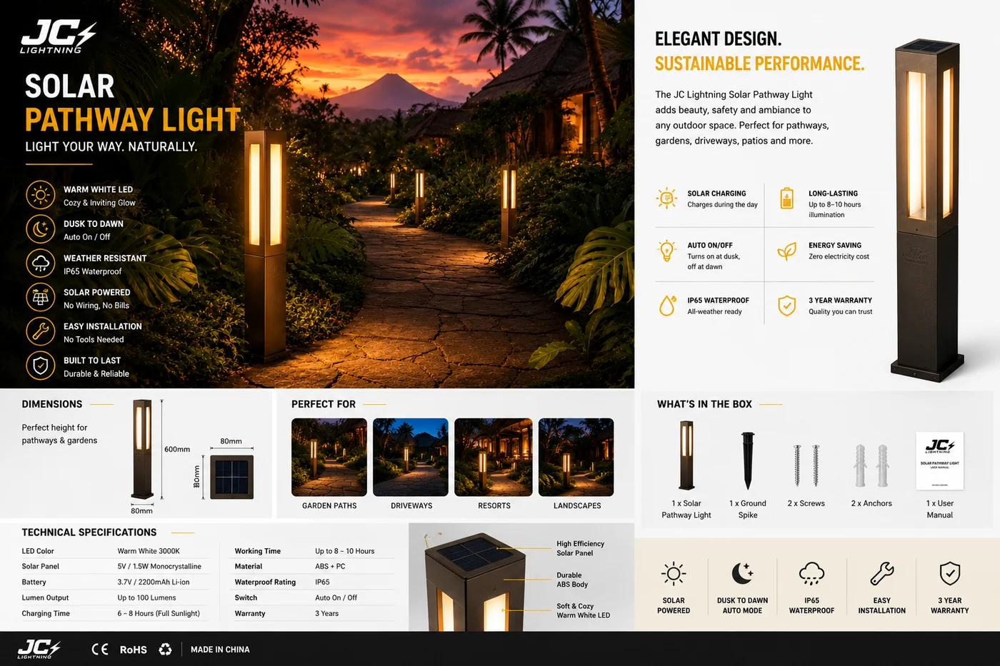

太阳能庭院柱灯(1–2m)
用于庭院、别墅入口和广场的现代铝制柱灯——10W,800 流明 3000K 暖光,IP65 密封,8000mAh 大容量磷酸铁锂电池支持每晚 10–12 小时。

这是花园系列的高端门面之作。1–2m 高的铝制立柱为别墅入口、庭院或商业广场带来真正的建筑存在感,而 800 流明的 3000K 暖光营造迎客氛围。超大 8000mAh 磷酸铁锂电池是它可信的关键——每晚满输出 10–12 小时,无需为接电网而开挖。
规格参数
| 功率 | 10W |
|---|---|
| 光通量 | 800 lm |
| 色温 | 3000K 暖白 |
| IP 防护等级 | IP65 |
| 电池 | 8000mAh 磷酸铁锂 |
| 续航时间 | 10–12 小时 |
| 高度 | 1m / 2m |
| 饰面 | 黑 / 白 / 炭灰 |
| 灯体 | 铝 |
| 认证 | CE + RoHS |
为什么选它
建筑存在感。是真正的立柱,而非地插——景观设计师和开发商为入口与广场想要的规格。
大电池,真续航。8000mAh 磷酸铁锂满足整整 10–12 小时,因此每晚都在线,而不只在盛夏。为什么电池化学很关键 →
三饰面、两高度。同一产品家族即可灵活匹配项目。
已认证、支持 OEM。每份报价附 CE + RoHS;可定制饰面与品牌。
为这些市场而建西班牙、澳大利亚、中东和拉美的别墅、住宅开发与商业广场项目——无安装成本的高端景观照明。